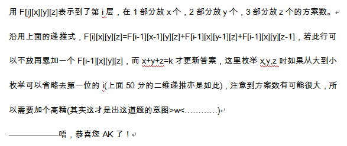

原文连接:https://www.cnblogs.com/I-Love-You-520/p/11252648.html
T1 圆圈舞蹈
题目
【题目描述】
熊大妈的奶牛在时针的带领下，围成了一个圈跳舞。由于没有严格的教育，奶牛们之间的间隔不一致。
奶牛想知道两只最远的奶牛到底隔了多远。奶牛A到B的距离为A顺时针走和逆时针走，到达B的较短路程。
告诉你相邻个奶牛间的距离，请你告诉奶牛两只最远的奶牛到底隔了多远。
【输入格式】
第一行一个整数N，表示有N只奶牛。
接下来2~N+1行，第I行有一个数，表示第I-1头奶牛顺时针到第I头奶牛的距离。
第N+1行的数表示第N头奶牛顺时针到第1头奶牛的距离。
【输出格式】
一行，表示最大距离。
【输入样例】
5
1
2
3
4
5
【输出样例】
7
【数据规模】
2<=N<=100000，
1<=距离<=maxlongint,距离和<=maxlongint。
解析
分析一下题目，多试几组数据，不难发现，其实我们并不需要知道所有牛之间的距离，
只需要知道对于每头牛来说，离它最远的牛有多远，实际实现时，我们需要求出每头牛顺时针与逆时针离它最远的牛。
这里引用一下大佬的解释：
如图，对于枚举的第一头牛A，找到离它最远的牛B，
当我们沿顺时针枚举第二头牛C时，离C最远的牛不可能是图中红色区域的牛了，
所以我们只需要将B沿顺时针枚举，当蓝色部分的距离小于红色部分时枚举停止，
因为此时蓝色部分的牛不可能是离C最远的牛了。
这个算法是沿着圈绕了一圈，时间复杂度为O(n)，足以AC。
Code


#include<cmath> #include<cstdio> #include<cstring> #include<iostream> #include<algorithm> using namespace std; const int MAXN = 100005; int ans, a[MAXN], b[MAXN], n, i, j, k, tot, t; int main() { //freopen("circle.in", "r", stdin); //freopen("circle.out", "w", stdout); cin >> n; for(i = 1; i <= n; i ++) scanf("%d", &a[i]); for(i = 1; i <= n; i ++) tot += a[i]; j = 2; t = a[1]; for(i = 1; i <= n; i ++) { while (min(t, tot - t) <= min(t + a[j], tot - t - a[j]) && j < n) j ++, t += a[j - 1]; ans = max(ans, min(t, tot - t)); t -= a[i]; } cout << ans << endl; //fclose(stdin); fclose(stdout); }
T2 小麦亩产一千八
题目
【题目描述】
“有了金坷垃，肥料一袋能顶两袋撒，小麦亩产一千八，吸收两米下的氮磷钾……”，话说HYSBZ（Hengyang School for Boys & Zy）学识渊博孩纸们一讲到粮食，都会想起印度那个著名的故事：
国王要在第一个格子里放入一粒小麦，接下来的格子放入前面一个格子的两倍的小麦。这样所需小麦总数是巨大的，哪是不用金坷垃就能完成的任务？
不过为了减轻国王的任务，那个下棋获胜的宰相换了一个要求：“我只需要你在棋盘外放一粒小麦，可以将其理解为第0个格子，然后你需要在第一个格子里放入若干小麦，
之后每一个格子放入前两个格子的小麦数之和的小麦，并且要满足第a个格子放x粒小麦，第b个格子放……”说到这，宰相突然发现自己说的满足第a个格子放x粒小麦的情况可能不存在……
欺君可是大罪啊！国王看到宰相迟迟不说，自己也烦了！我自己来算！于是国王拜托你，让你算出第b个格子应该放几粒小麦。当然，就算答案不存在，你也是要告诉国王的。
【输入格式】
该题有多组数据，请读到文件末结束。
对于每一组数据仅一行，3个正整数a,x,b,分别表示第a个格子放了x粒小麦，以及你所需要计算的是第b个格子的小麦数量。
【输出格式】
对于每一次询问，仅1个整数，为第b个格子的小麦数量，若宰相说的情况不存在，那么请输出-1。
【输入样例】
1 1 2
3 5 4
3 4 6
12 17801 19
【输出样例】
2
8
-1
516847
【数据规模】
对于50%的数据：如果答案存在，那么p<=50
对于100%的数据：1<=数据组数<=10000，1<=a,b<=20, 数据保证如果答案存在，那么1<=p<=1000000.(注:p是第一格放置的小麦数)。
解析
题目明显给出了一个拓展的斐波那契数列，其满足：f[0]=1,f[1]=p,f[2]=p+1,f[3]=2*p+1······
而原来的斐波那契数列满足：F[0]=1,F[1]=1,F[2]=2,F[3]=3······
设g[i]=f[i]-F[i]，则g[0]=0,g[1]=p-1,g[2]=p-1,g[3]=2*p-2,g[4]=3*p-3······
输入已经给出了f[a]=x，所以g[a]=x-F[a]=F[a-1]*(p-1)，
我们先预处理出F数组，那么每组数据我们可以O（1）计算出p，
之后递推出答案就行了，每组数据时间复杂度为O（b）。
Code
#include<cmath> #include<cstdio> #include<cstring> #include<iostream> using namespace std; int a, b; long long f[30], x; inline void check(int mid) { f[1] = mid; for(int i = 2; i <= a; i ++) f[i] = f[i - 1] + f[i - 2]; } inline void getans(int mid) { f[1] = mid; for(int i = 2; i <= b; i ++) f[i] = f[i - 1] + f[i - 2]; printf("%lld\n", f[b]); } int main() { //freopen("kela.in", "r", stdin); //freopen("kela.out", "w", stdout);return 0； f[0] = 1; while (scanf("%d%lld%d", &a, &x, &b) != EOF) { int l = 1, r = 1000000; while (l != r - 1) { int mid = (l + r) >> 1; check(mid); if (f[a] > x) r = mid; else l = mid; } check(l); if (f[a] == x) getans(l); else { check(r); if (f[a] == x) getans(r); else printf("-1\n"); } } //fclose(stdin); fclose(stdout); }
T3 好元素
题目
【题目描述】
小A一直认为，如果在一个由N个整数组成的数列{An}中，存在以下情况：
Am+An+Ap = Ai (1 <= m, n, p < i <= N , m,n,p可以相同)，那么Ai就是一个好元素。
现在小A有一个数列，请你计算数列中好元素的数目。
【输入格式】
第一行只有一个正整数N，意义如上。
第二行包含N个整数，表示数列{An}。
【输出格式】
输出一个整数，表示这个数列中好元素的个数。
【输入样例】
2
1 3
【输出样例】
1
【数据规模】
对于10%的数据1<=N<=10
对于40%的数据1<=N<=500 -10^5<=Ai<=10^5
对于70%的数据1<=N<=5000 -10^6<=Ai<=10^6
对于100%的数据1<=N<=5000 -10^9<=Ai<=10^9
解析
10分做法：四层循环枚举a[i],a[m],a[n],a[p]，时间复杂度O(n4)
40分做法：bool数组存储a[i]，再三层循环a[m],a[n],a[p]，若a[i]存在个数就+1，时间复杂度O(n3)
70分做法：我们发现40分做法计算三数和用了O(n3)，而查询a[i]只用了O(n)，
我们把代数式转换为a[m]+a[n]=a[i]-a[p]，这样计算和查询都是O(n2)，总时间复杂度为O(n2)
100分做法：在70分算法的前提下加上哈希进行判断即可。
Code
#include<algorithm> #include<iostream> #include<cstring> #include<cstdlib> #include<cstdio> #include<string> #include<cmath> #include<ctime> #include<queue> #include<stack> #include<map> #include<set> using namespace std; const int MAXN=int(5e3)+3; const int MAXH=int(1e7)+int(3e6); const int Hash_Value=33554431; const int MAXV=Hash_Value+1; int Top,Val[MAXH],Next[MAXH],First[MAXV]; int N,Ans,A[MAXN]; void Push_Hash(const int &x) { int Px=x&Hash_Value; Next[++Top]=First[Px]; Val[Top]=x; First[Px]=Top; return ; } bool Ask_Hash(const int &x) { int Px=x&Hash_Value; for (int k=First[Px];k!=0;k=Next[k]) if (Val[k]==x) return true; return false; } int Get() { int Sign=0,Num=0; char ch; for (ch=getchar();ch<'0'||ch>'9';ch=getchar()) if (ch=='-') break; ch=='-'?Sign=1:Num=ch-48; for (ch=getchar();ch>='0'&&ch<='9';ch=getchar()) Num=Num*10+ch-48; return Sign==0?Num:-Num; } int main() { //freopen("good.in","r",stdin); //freopen("good.out","w",stdout); N=Get(); for (int i=1;i<=N;++i) { A[i]=Get(); for (int j=i-1;j>=1;--j) { int Now=A[i]-A[j]; if (Ask_Hash(Now)) { ++Ans; break; } } for (int j=1;j<=i;++j) { int Now=A[i]+A[j]; Push_Hash(Now); } } printf("%d\n",Ans); //fclose(stdin);fclose(stdout); return 0; }
T4 国际象棋
题目
【题目描述】
小口口不是一个普通青年，所以他不喜欢玩普通国际象棋。他喜欢玩的国际象棋是这样的：把两个边长分别为 N*N 和 M*M 的国际象棋盘拼在一起。就像这样：
现在小口口又来刁难你了：他告诉你 N,M,W,H 以及 K。
然后问你这样的棋盘上放 K 个城堡互相不攻击有多少种方案。
城堡的攻击范围是一整行和一整列。
【输入格式】
第一行，五个整数，分别为 N,M,W,H,K。
【输出格式】
输出一行一个整数表示方案总数。
【输入样例】
8 8 3 4 1
【输出样例】
108
【数据规模】
10%的数据N=M=K.
50%的数据W=H=0,1<=N,M<=15(包括上述的10%的数据).
100%的数据N,M<=20,W,H,K<=10^9.
解析
本蒟蒻表示，这题神马不会写，随便写了个暴力就溜了。
So，直接抛出巨佬题解：

Code
#include<cstdio> #include<cstring> #include<algorithm> using namespace std; typedef long long ll; int n,m,w,h,k,W,H; struct ff { int len,a[50]; ff(){ len=0; memset(a,0,sizeof(a)); } inline ff operator *(const int &b){ ff c=*this; for (int i=1; i<=len; ++i) c.a[i]*=b; for (int i=1; i<=len; ++i){ c.a[i+1]+=c.a[i]/10; c.a[i]%=10; } c.len=len; while (c.a[c.len+1]) c.len++, c.a[c.len+1]=c.a[c.len]/10, c.a[c.len]%=10; return c; } inline void operator +=(const ff &b){ len=max(len,b.len); for (int i=1; i<=len; ++i){ a[i]+=b.a[i]; a[i+1]+=a[i]/10; a[i]%=10; } while (a[len+1]) ++len, a[len+1]=a[len]/10, a[len]%=10; } }f[45][25][25][25],ans; void PRT(ff a) { for (int i=a.len; i; --i) printf("%d",a.a[i]); printf("\n"); } bool check(int x,int y) { if (x<=n && y<=n) return 1; if (x>w && x<=w+m && y>h && y<=h+m) return 1; return 0; } void work() { if (w>=n) w=n; if (h>=n) h=n; if (m+w<=n && m+h<=n) w=h=0,m=n; int H=max(h+m,n),W=max(m+w,n); //H!W! int l1=w,l2=min(w+m,n),l3=max(w+m,n); int n1=l1,n2=l2-l1,n3=l3-l2; f[0][0][0][0].len=1; f[0][0][0][0].a[1]=1; for (int i=0; i<H; ++i){ for (int x=0; x<=n1; ++x) if (x<=k){ for (int y=0; y<=n2; ++y) if (x+y<=k) for (int z=0; z<=n3; ++z) if (x+y+z<=k){ if (check(l1,i+1)){ f[i+1][x+1][y][z]+=f[i][x][y][z]*(n1-x); } if (check(l3,i+1)) f[i+1][x][y][z+1]+=f[i][x][y][z]*(n3-z); if (check(l2,i+1)) f[i+1][x][y+1][z]+=f[i][x][y][z]*(n2-y); f[i+1][x][y][z]+=f[i][x][y][z]; } } } for (int x=0; x<=n1; ++x) for (int y=0; y<=n2; ++y) for (int z=0; z<=n3; ++z) if (x+y+z==k){ ans+=f[H][x][y][z]; } for (int i=ans.len; i; --i) printf("%d",ans.a[i]); } int main() { //freopen("chess.in","r",stdin); //freopen("chess.out","w",stdout); scanf("%d%d%d%d%d",&n,&m,&w,&h,&k); work(); //fclose(stdin); fclose(stdout); }